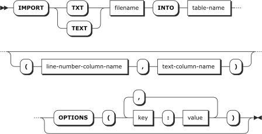

IMPORT TXT Statement
Reads a text file (.TXT) from disk into a notebook table. Each line of text in the file becomes a two-column row in the
target table. One column contains a line number (starting at 0) and the other column contains the text of the line.
Syntax

Arguments
- filename (string expression)
The absolute path to the text file to read.
- table-name (identifier or string expression)
The name of the notebook table to read the text file into.
If the table does not exist, it will be created. If it does exist, by default new rows will be appended, but the
TRUNCATE_EXISTING_TABLE option can be used to overwrite the existing table data.
- line-number-column-name (identifier or string expression)
The name of the table column that will contain
the line number (an integer starting at 0). If column names are not specified, the default name "number" is used.
- text-column-name (identifier or string expression)
The name of the table column that will contain the
line text. If column names are not specified, the default name "line" is used.
Options
SKIP_LINES (non-negative integer, default: 0)
Indicates how many initial lines should be
skipped in the input file. TAKE_LINES (-1 or non-negative integer, default: -1)
Indicates the maximum number of text
lines to read from the file, not including the lines skipped due to the SKIP_LINES option. If -1 is specified,
then the whole file is read. TRUNCATE_EXISTING_TABLE (0 or 1, default: 0)
If the target table name exists, this option
indicates whether the existing data rows should be deleted.
- 0 = Keep existing rows and append new rows
- 1 = Delete existing rows
TEMPORARY_TABLE (0 or 1, default: 0)
If the target table name does not exist, and therefore
a new table will be created, this option indicates whether the new table will be a temporary table.
- 0 = Use
CREATE TABLE
- 1 = Use
CREATE TEMPORARY TABLE
FILE_ENCODING (integer 0-65535, default: 0)
Indicates the text encoding to use when reading
the text file. Specify 0 to detect the encoding automatically. Any nonzero integer is treated as a Windows code page
number.
Examples
IMPORT TXT 'C:\MyFile.txt' INTO mytable;
Reads the text in "MyFile.txt" into a notebook table called
mytable. Because no options are specified, the whole file is read. IMPORT TXT 'C:\MyFile.txt' INTO mytable OPTIONS (TAKE_LINES: 10);
Only the first 10 lines of "MyFile.txt"
are read into mytable.